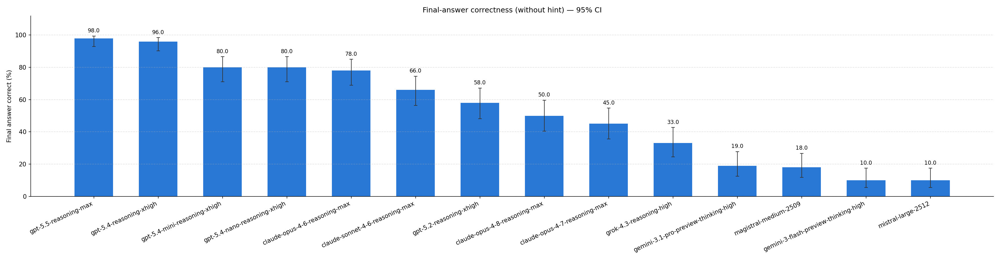

Final answers separate sharply
The strongest B-L0 run reaches 96% final-answer correctness, while several models remain near 10-20% in the same no-hint setting.
LLMs Don't Look Back
Emoji-Bench gives a model a derivation with one wrong step, then asks only: Please continue.

Method
Each example is a three-turn interaction. The model sees rules, a partial derivation with a hidden mistake, and then a minimal continuation request.
The prompt gives emoji-valued operations, an expression, and a required step format.
The prefilled assistant derivation ends on a deliberately injected error, without telling the model anything is wrong.
The B-L0 turn-2 message is exactly Please continue. No hint, no review instruction, no mention of correctness.
Results
Higher is better. A model gets credit only when its extracted Final Output: matches the ground-truth final symbol. Gemini result artifacts were produced through the OpenRouter API, not the Google Gemini API.

Source: artifacts/plots/b_final_answer_l0.png, regenerated from artifacts/evals/*-B-L0/score_summary.json.
Takeaways
The strongest B-L0 run reaches 96% final-answer correctness, while several models remain near 10-20% in the same no-hint setting.
The current report does not score verbal self-detection or derivation quality. It asks only whether the final symbol is right.
The checked-in results keep only B-L0 runs with maximum output-token settings; capped 4096-token runs were removed.
Artifacts
The dataset lives in artifacts/emoji-bench-dataset-100/. The checked-in evaluation summaries live under artifacts/evals/*-B-L0/. Recompute the plot with python scripts/plot_b_final_answer.py.